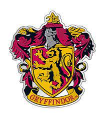

While Quidditch was the first successful broomstick game, while there are others, none had the vast appeal that Quidditch did. The beauty of Quidditch was that it took the best aspects of all its predecessors, added its own unique twists, and ended up as a game that would remain popular with the masses for centuries.